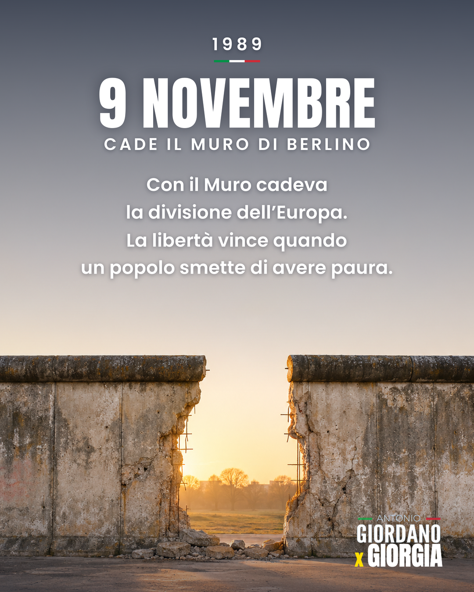
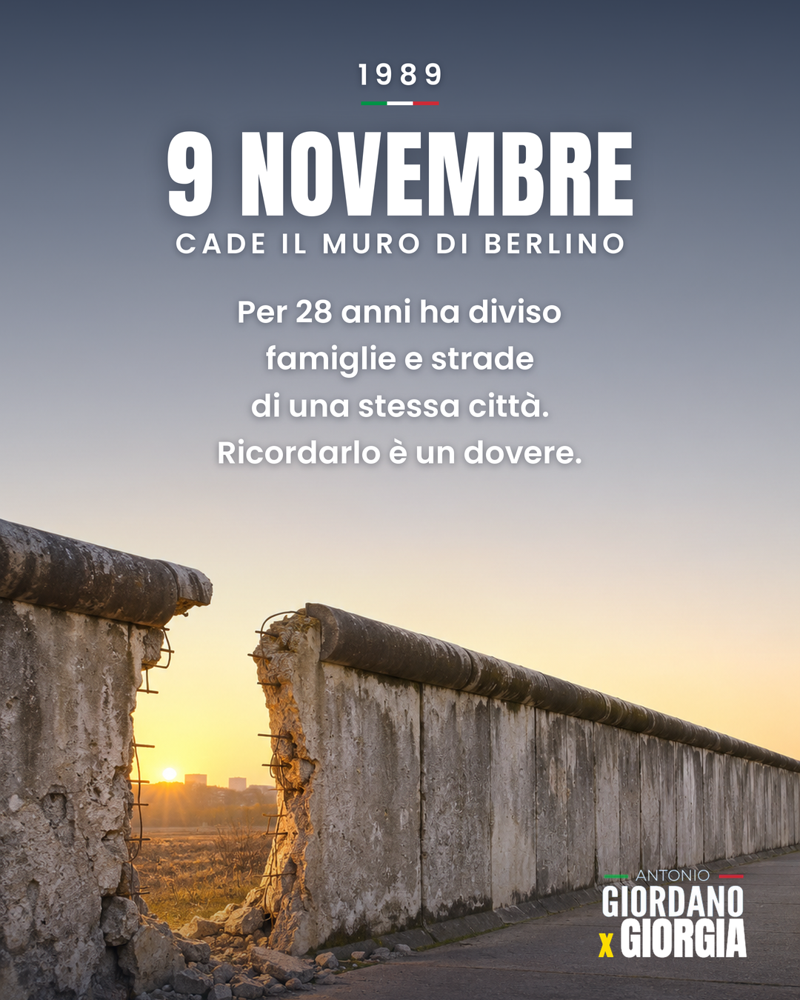

<!doctype html><meta charset="utf-8"><meta name="viewport" content="width=device-width,initial-scale=1"><title>Caduta del Muro di Berlino · ricorrenza</title><style>body{margin:0;padding:24px 16px;font:16px/1.5 system-ui,sans-serif;background:#f4f5f7;color:#1a1d24}h1{font-size:22px;margin:0 0 16px}main{display:grid;grid-template-columns:repeat(auto-fit,minmax(280px,1fr));gap:20px;max-width:1100px;margin:auto}figure{margin:0;background:#fff;border-radius:12px;overflow:hidden;box-shadow:0 1px 4px #0001}img{width:100%;display:block}figcaption{padding:14px 16px}</style><main><h1 style="grid-column:1/-1">Caduta del Muro di Berlino · ricorrenza</h1><figure><figcaption><b>Variante 1</b><br>9 novembre 1989. Cadeva il Muro di Berlino e con lui la divisione dell’Europa.<br>Un giorno da ricordare: la libertà vince quando un popolo smette di avere paura.</figcaption></figure><figure><figcaption><b>Variante 2</b><br>9 novembre 1989. Dopo 28 anni cadeva il Muro di Berlino, che aveva diviso famiglie e strade di una stessa città.<br>Ricordarlo è un dovere.</figcaption></figure></main>